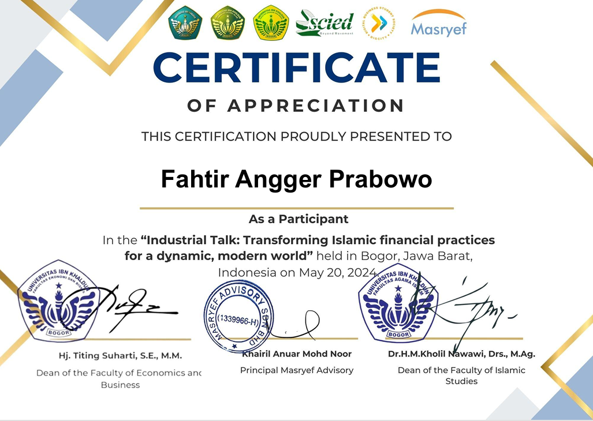
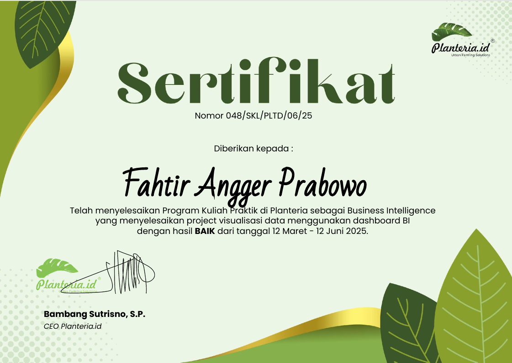

Sertifikat


Sertifikat Penghargaan
Dalam program ini, saya mengerjakan proyek visualisasi data dengan mengembangkan dashboard Business Intelligence. Proyek mencakup pengolahan data, pembuatan visualisasi yang informatif, serta penyusunan output analisis untuk mendukung proses pengambilan keputusan. Program ini berhasil saya selesaikan dengan hasil penilaian BAIK dari Planteria.id.

Sertifikat Penghargaan
Acara ini mengangkat tema “Rethinking Global Trade and Economic Integration in The Digital Age” dan diselenggarakan oleh Fakultas Ekonomi dan Bisnis Universitas Ibn Khaldun Bogor bekerja sama dengan Universitas Tazkia. Sebagai peserta, saya mendapatkan wawasan mengenai isu-isu ekonomi global, integrasi ekonomi digital, serta perkembangan perdagangan internasional di era modern.